重庆交通大学信息科学与工程学院
实验报告
班 级： 曙光1901 班
姓名 学号： 樊宇杰 631907060603
实验项目名称： 计算机网络 Cisco Packet Tracer 实验
实验项目性质： 验证性
实验所属课程： 计算机网络
实验室(中心)： 计算中心三机房
指 导 教 师 ： 王勇
实验完成时间： 2020 年 12 月 15 日
一、实验概述：
【实验目的】
【实施环境】（使用的材料、设备、软件）
Windows操作系统环境
二、实验内容
第1题 CPT 软件使用简介
【实验过程】（步骤、记录、数据、程序等）
第2题 直接连接两台 PC 构建 LAN
【实验过程】（步骤、记录、数据、程序等）
选择一个交换机和两个终端设备
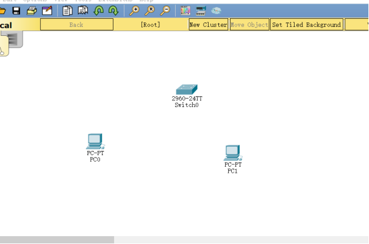
选择交叉线
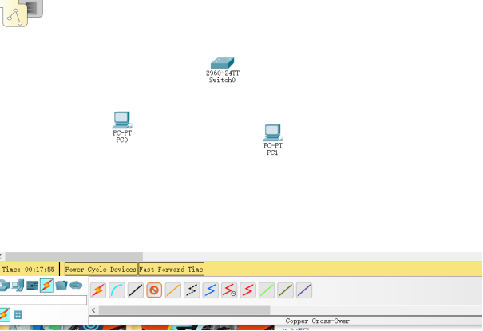
连接
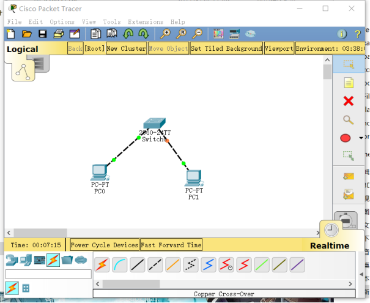
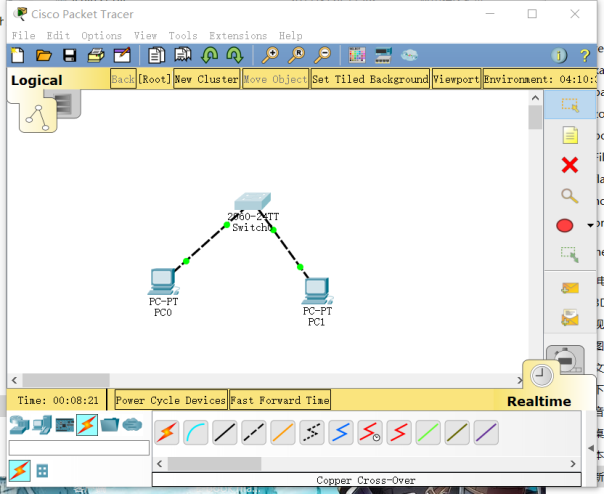
0号主机和1号主机ip设置
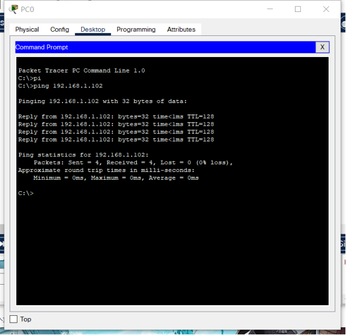
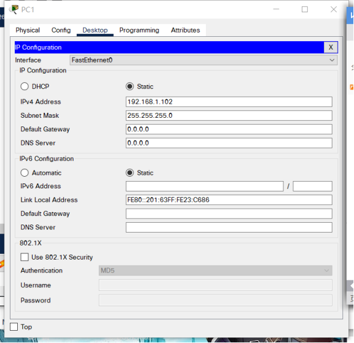
0号主机ping1号主机
1号主机ping0号主机
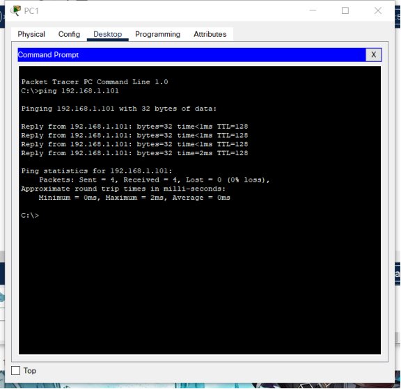
第3题 用交换机构建 LAN
【实验过程】（步骤、记录、数据、程序等）
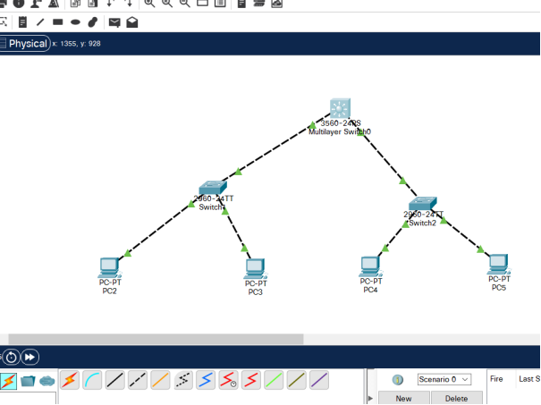
✎ 问题
PC0 能否 ping 通 PC1、PC2、PC3 ？
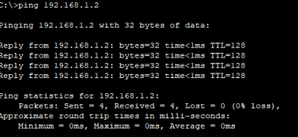
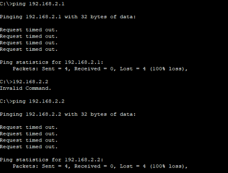
Pc1能ping通 而pc2,pc3不能ping通
PC3 能否 ping 通 PC0、PC1、PC2 ？为什么？
Pc2能ping通,pc0,pc1不能 pc3与pc2网络号相同,与pc0 pc1的网络号不相同,
不是同一个子网
将 4 台 PC 的掩码都改为 255.255.0.0 ，它们相互能 ping 通吗？为什么？
能相互ping通 因为最顶层是三层交换机,含有路由功能,255.255.0.0为掩码时
4台pc的网络号都相同 192.168.0.0 /16
使用二层交换机连接的网络需要配置网关吗？为什么？
不需要
交换机接口地址列表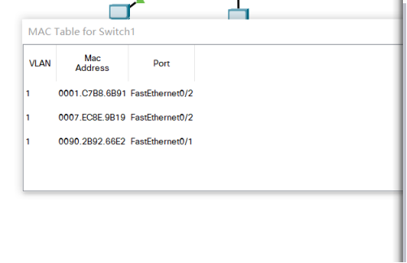
第4题 生成树协议（Spanning Tree Protocol）
【实验过程】（步骤、记录、数据、程序等）
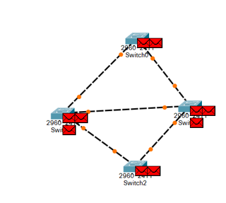
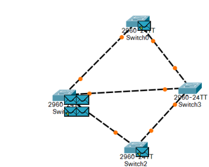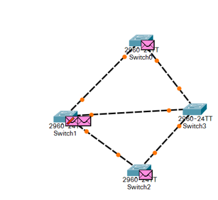
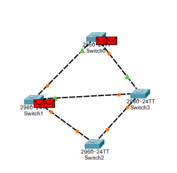
选取switch2为根
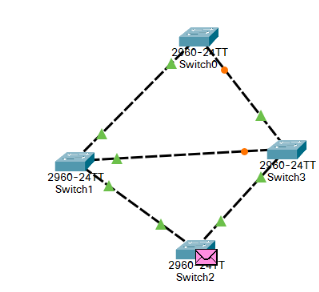
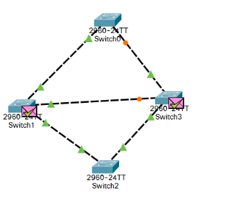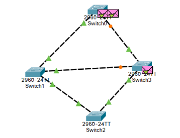
第5题 路由器配置初步
【实验过程】（步骤、记录、数据、程序等）
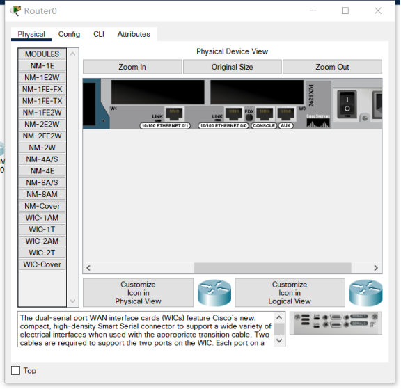
加入wic 2t模块
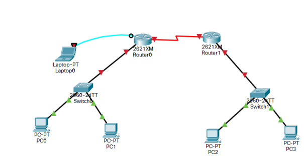
配置路由器后
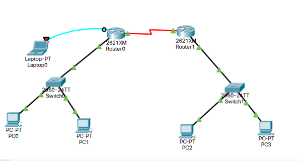
第5题 路由器配置初步
【实验过程】（步骤、记录、数据、程序等）
第5题 路由器配置初步
【实验过程】（步骤、记录、数据、程序等）
第5题 路由器配置初步
【实验过程】（步骤、记录、数据、程序等）
第5题 路由器配置初步
【实验过程】（步骤、记录、数据、程序等）